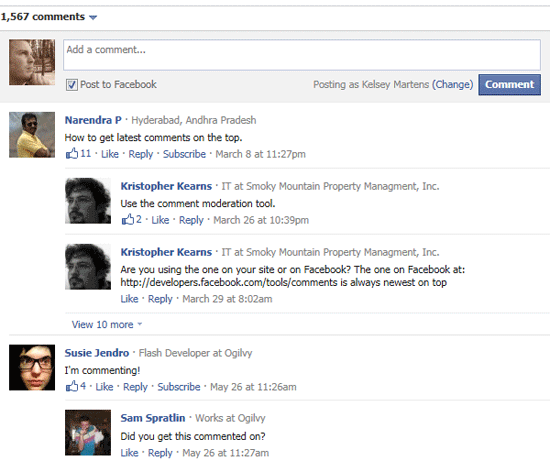

FBC:Comments template tag
The Facebook Comments box lets people comment on content on your site using their Facebook profile and shows this activity to their friends in news feed. It also contains built-in moderation tools and special social relevance ranking.
You can integrate the Facebook Comments box on your site. This is a social plugin, so users do NOT have to have synced accounts to comment through this on your site using the Facebook Comments box. They just need to be logged into Facebook.
{exp:fbc:comments}

Parameters
The following parameters are available for use:
href=
href="{url_title_path='news/article'}"
The permanent URL of the entry that is being commented on. For example:
- http://www.yoursite.com
- {site_url}
- {url_title_path='news/article'}
- http://www.site.com/{segment_2}/{segment_3}/
num_posts=
num_posts="5"
This parameter allows you to set the maximum number of comments you'd like the Comment box to show by default. If there are more comments than the value you set, user's will see a View more link that will load more comments via AJAX. Default is 5.
width=
width="500"
This parameter allows you to set the width (in pixels) of the Comment box. Default is 400.
colorscheme=
colorscheme="dark"
This parameter allows you to control the color scheme of the Comment box with predetermined Facebook options. Options are light or dark.
Examples
Below is some example code on how to display the Facebook Comment box on your site:
{exp:channel:entries require_entry="yes"}
<h2>{title}</h2>
<p>{body}</p>
<h3>Comments</h3>
{exp:fbc:comments
href="{url_title_path='news/article'}"
num_posts="5"
width="500"
colorscheme="light"
}
{/exp:channel:entries}